This is the companion webpage for the DAFx 2021 article "On the
Estimation of Sinusoidal Parameters via Parabolic Interpolation of
Scaled Magnitude Spectra". Here you will find additional results
that could not be included in the article due to a lack of space.
Figures and Tables
Below are the figures for all 12 windows tested.
Maximizing the Line Fit
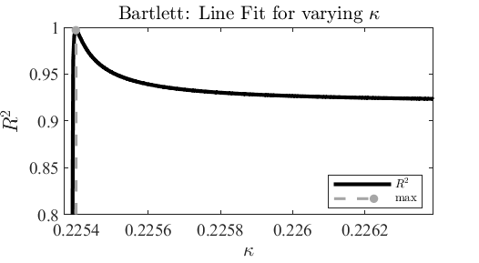
Coefficient of determination as a function of the variable
kappa for the Bartlett window.
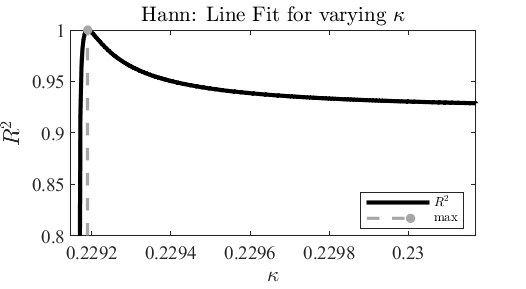
Coefficient of determination as a function of the variable
kappa for the Hann window.
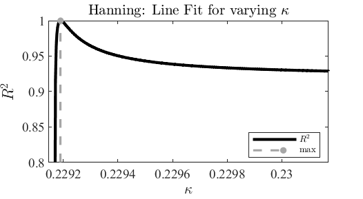
Coefficient of determination as a function of the variable
kappa for the Hanning window.
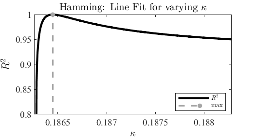
Coefficient of determination as a function of the variable
kappa for the Hamming window.
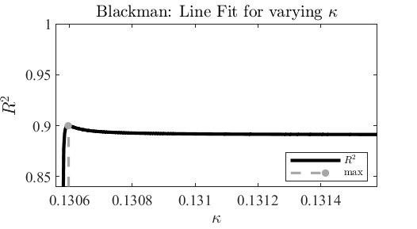
Coefficient of determination as a function of the variable
kappa for the Blackman window.
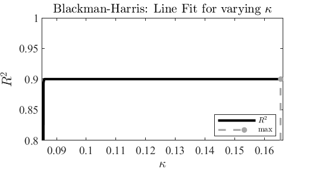
Coefficient of determination as a function of the variable
kappa for the Blackman-Harris window.
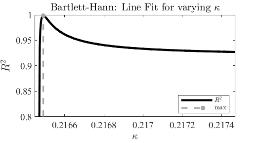
Coefficient of determination as a function of the variable
kappa for the Bartlett-Hann window.
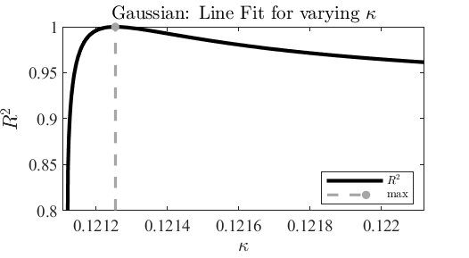
Coefficient of determination as a function of the variable
kappa for the Gaussian window.
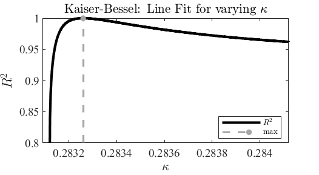
Coefficient of determination as a function of the variable
kappa for the Kaiser-Bessel window.
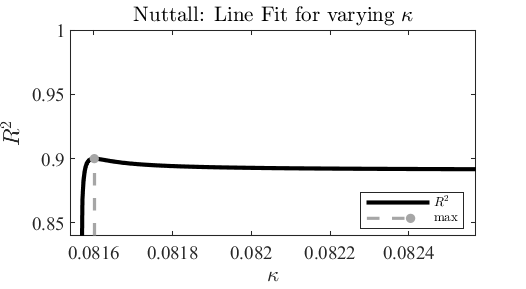
Coefficient of determination as a function of the variable
kappa for the Nuttall window.
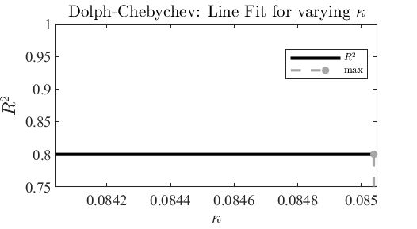
Coefficient of determination as a function of the variable
kappa for the Dolph-Chebychev window.
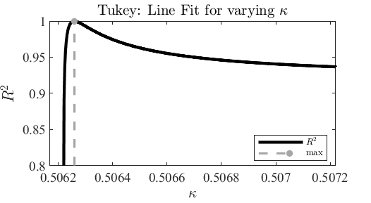
Coefficient of determination as a function of the variable
kappa for the Tukey window.
Final Line and Curve Fits
Resulting curve fit for the Bartlett window.
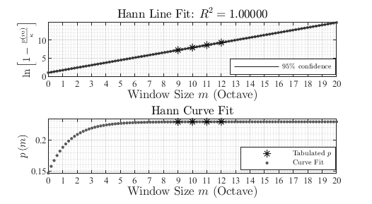
Resulting curve fit for the Hann window.
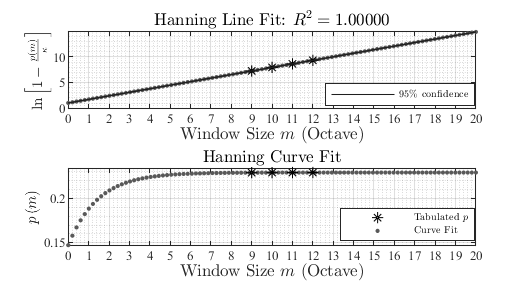
Resulting curve fit for the Hanning window.
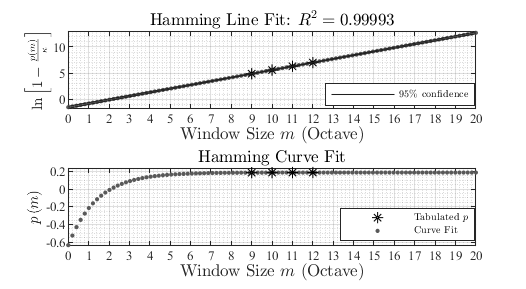
Resulting curve fit for the Hamming window.
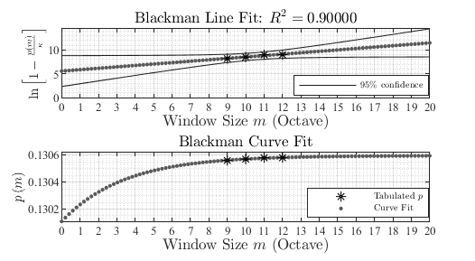
Resulting curve fit for the Blackman window.
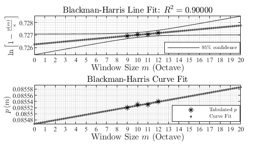
Resulting curve fit for the Blackman-Harris window.
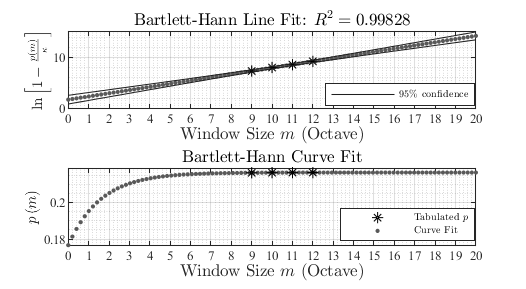
Resulting curve fit for the Bartlett-Hann window.
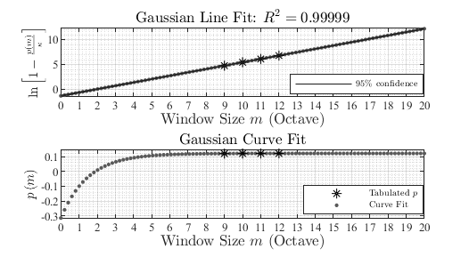
Resulting curve fit for the Gaussian window.
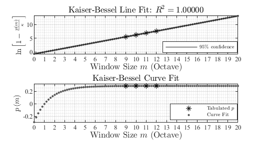
Resulting curve fit for the Kaiser-Bessel window.
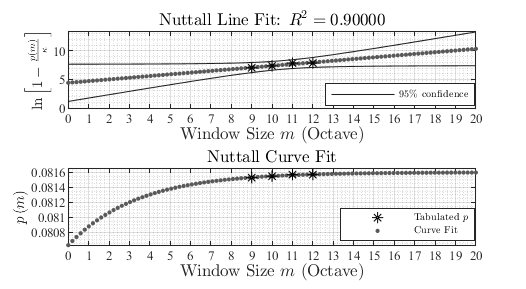
Resulting curve fit for the Nuttall window.
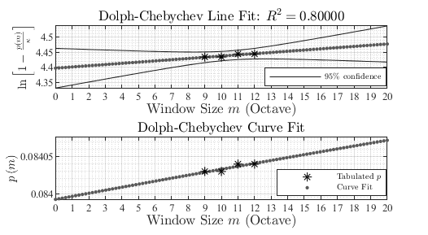
Resulting curve fit for the Dolph-Chebychev window.
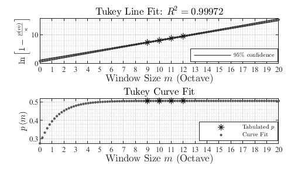
Resulting curve fit for the Tukey window.
How much Zero-Padding for ZP-Log-PI to Outperform Pow-PI
Maximum Amplitude Error
Maximum amplitude estimation error as a function of the
zero-padding factor for the Bartlett window.
Maximum amplitude estimation error as a function of the
zero-padding factor for the Hann window.
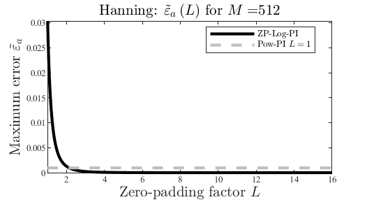
Maximum amplitude estimation error as a function of the
zero-padding factor for the Hanning window.
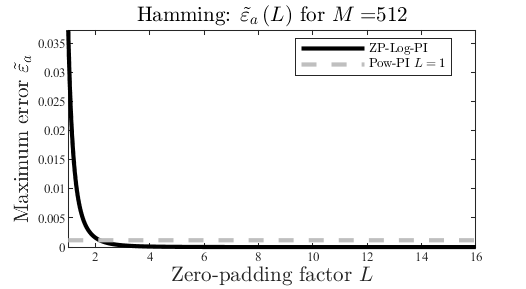
Maximum amplitude estimation error as a function of the
zero-padding factor for the Hamming window.
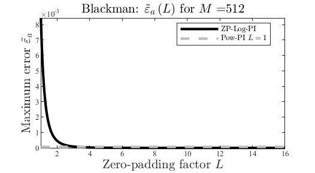
Maximum amplitude estimation error as a function of the
zero-padding factor for the Blackman window.
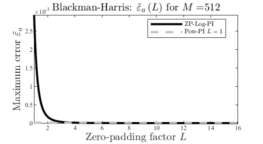
Maximum amplitude estimation error as a function of the
zero-padding factor for the Blackman-Harris window.
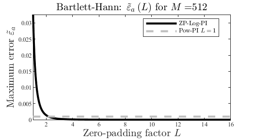
Maximum amplitude estimation error as a function of the
zero-padding factor for the Bartlett-Hann window.
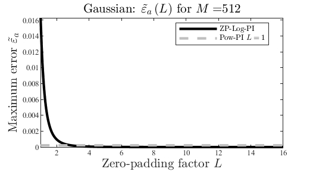
Maximum amplitude estimation error as a function of the
zero-padding factor for the Gaussian window.
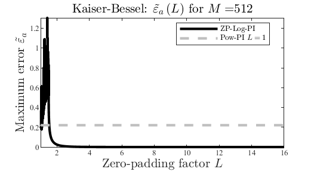
Maximum amplitude estimation error as a function of the
zero-padding factor for the Kaiser-Bessel window.
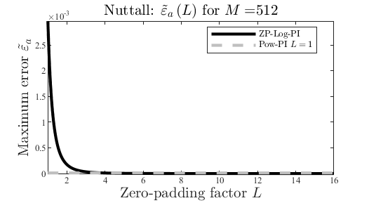
Maximum amplitude estimation error as a function of the
zero-padding factor for the Nuttall window.
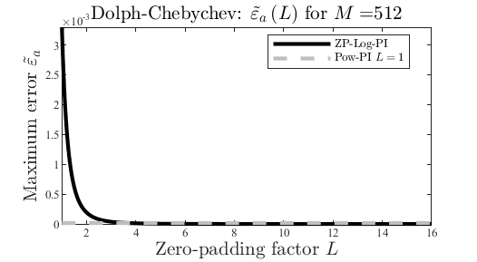
Maximum amplitude estimation error as a function of the
zero-padding factor for the Dolph-Chebychev window.
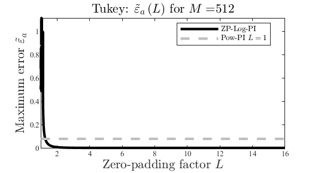
Maximum amplitude estimation error as a function of the
zero-padding factor for the Tukey window.
Maximum Frequency Error
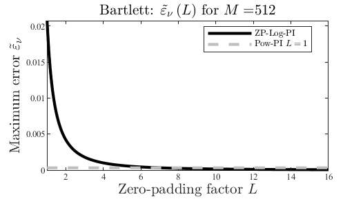
Maximum frequency bin estimation error as a function of
the zero-padding factor for the Bartlett window.
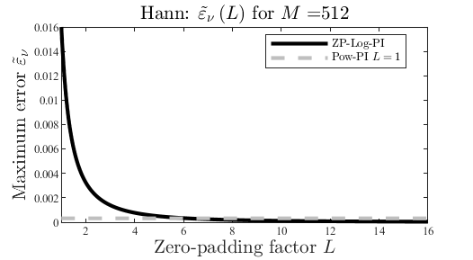
Maximum frequency bin estimation error as a function of
the zero-padding factor for the Hann window.
Maximum frequency bin estimation error as a function of
the zero-padding factor for the Hanning window.
Maximum frequency bin estimation error as a function of
the zero-padding factor for the Hamming window.
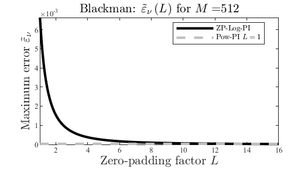
Maximum frequency bin estimation error as a function of
the zero-padding factor for the Blackman window.
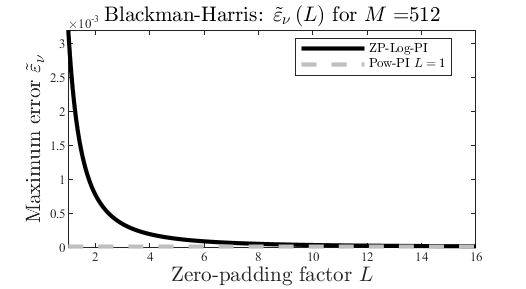
Maximum frequency bin estimation error as a function of
the zero-padding factor for the Blackman-Harris window.
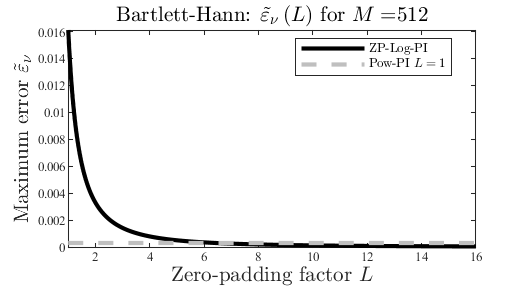
Maximum frequency bin estimation error as a function of
the zero-padding factor for the Bartlett-Hann window.
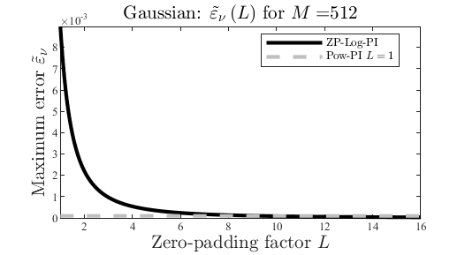
Maximum frequency bin estimation error as a function of
the zero-padding factor for the Gaussian window.
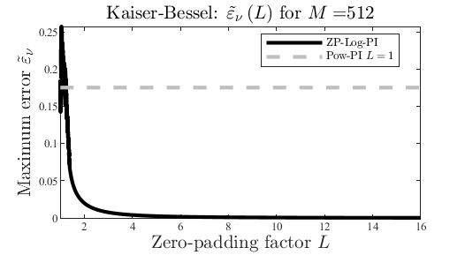
Maximum frequency bin estimation error as a function of
the zero-padding factor for the Kaiser-Bessel window.
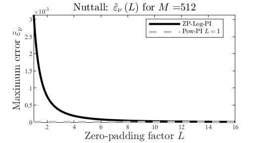
Maximum frequency bin estimation error as a function of
the zero-padding factor for the Nuttall window.
Maximum frequency bin estimation error as a function of
the zero-padding factor for the Dolph-Chebychev window.
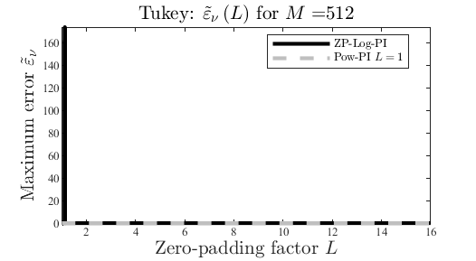
Maximum frequency bin estimation error as a function of
the zero-padding factor for the Tukey window.
The Impact of Zero-Padding on Log-Scaled Parabolic Interpolation
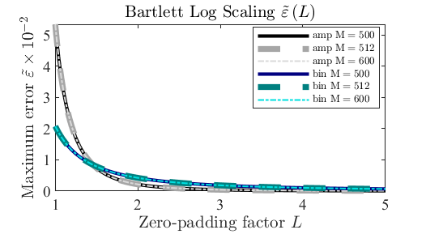
Maximum estimation error as a function of the zero-padding
factor for the Bartlett window.
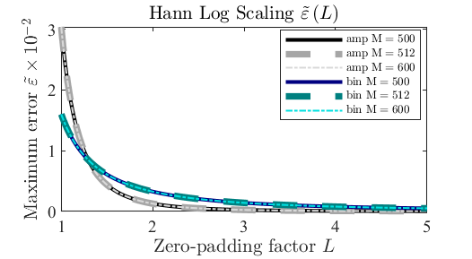
Maximum estimation error as a function of the zero-padding
factor for the Hann window.
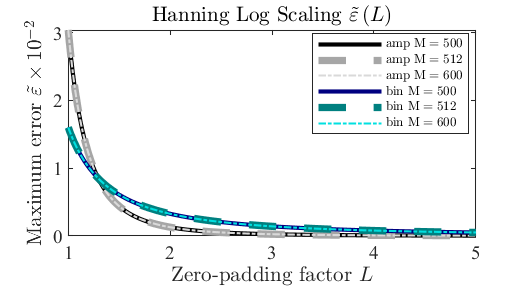
Maximum estimation error as a function of the zero-padding
factor for the Hanning window.
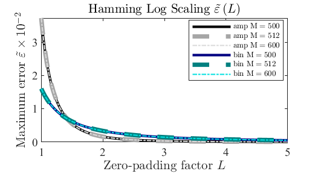
Maximum estimation error as a function of the zero-padding
factor for the Hamming window.
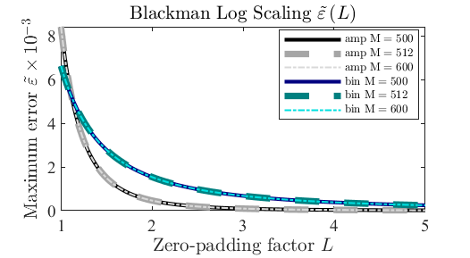
Maximum estimation error as a function of the zero-padding
factor for the Blackman window.
Maximum estimation error as a function of the zero-padding
factor for the Blackman-Harris window.
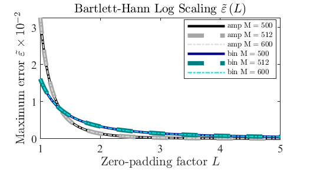
Maximum estimation error as a function of the zero-padding
factor for the Bartlett-Hann window.
Maximum estimation error as a function of the zero-padding
factor for the Gaussian window.
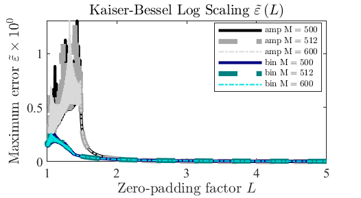
Maximum estimation error as a function of the zero-padding
factor for the Kaiser-Bessel window.
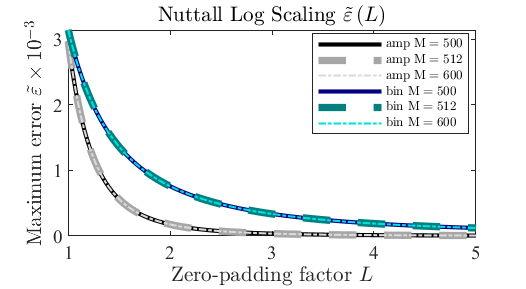
Maximum estimation error as a function of the zero-padding
factor for the Nuttall window.
Maximum estimation error as a function of the zero-padding
factor for the Dolph-Chebychev window.
Maximum estimation error as a function of the zero-padding
factor for the Tukey window.
The Impact of Zero-Padding on Power-Scaled Parabolic
Interpolation
Maximum estimation error as a function of the zero-padding
factor for the Bartlett window.
Maximum estimation error as a function of the zero-padding
factor for the Hann window.
Maximum estimation error as a function of the zero-padding
factor for the Hanning window.
Maximum estimation error as a function of the zero-padding
factor for the Hamming window.
Maximum estimation error as a function of the zero-padding
factor for the Blackman window.
Maximum estimation error as a function of the zero-padding
factor for the Blackman-Harris window.
Maximum estimation error as a function of the zero-padding
factor for the Bartlett-Hann window.
Maximum estimation error as a function of the zero-padding
factor for the Gaussian window.
Maximum estimation error as a function of the zero-padding
factor for the Kaiser-Bessel window.
Maximum estimation error as a function of the zero-padding
factor for the Nuttall window.
Maximum estimation error as a function of the zero-padding
factor for the Dolph-Chebychev window.
Maximum estimation error as a function of the zero-padding
factor for the Tukey window.
Sound Examples
Below are a few sound examples comparing both scalings used in the
article. The figures show the spectrogram of each sound. The
SRER is given by
, where
represents the waveform of the original sound and
represents the waveform of the residual, defined as
, where
is the waveform of the sinusoidal model. Download a
zip file
with the audio and figures below.